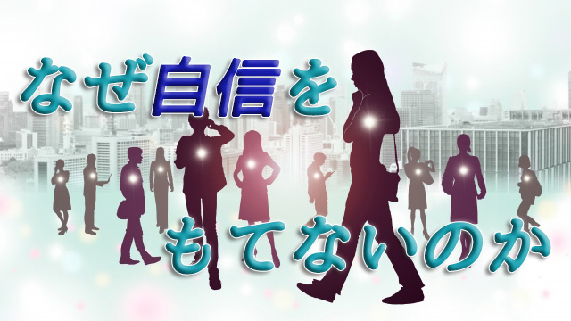

子をもつお母さんから「ウチの子自信なさそうに見えるんですが、何か自信をつけさせる方法はありますか」と問われることがある。
自信をもつにはどうしたらよいか。
これは案外多くの親が頭を悩ませている問題かも知れない。
自信があれば臆することなく物事に取り組むことができる。臆することなく取り組めばたいていのことは成功するに違いない。逆に考えれば成功する人は自信に満ちているのだから、まず自信をもつことが大事ではないか。
恐らく多くの人はそう考え「自信を持ちなさい」と我が子を励ましたり、事に際して自分自身にもそう語りかけたりするのだろう。
自分に自信を持つ。
確かに仕事であれ受験であれ、何かを成し遂げようとするとき自信があるのとないのでは結果に差が出ることは否めない。だから「やっぱり自信がないとダメだ！」と考えてしまう。
だがここに落とし穴がある。
自信をもとう、自信をもたなければと考えている時点ですでに「自信のない自分」がいるからだ。「自信のない自分」が前提になっている。本当に自信のある人は自分に自信があるかないかなど意識にさえのぼらない。「自信のある人」になりたいわけで、それは不自然な努力となりかえって「自信ある人」から遠ざかってしまうだろう。
このことは我が子に自信をつけさせたいと考えている親にも当てはまる。
「自信ある人間になりさえすれば」という思いはまさに自信のない人間の発想であること。だから子どもに「自信をもたせたい」というのは親自身の後悔が子どもには成功して欲しいという願いになっているのだ。
しかし私は親こそもっと自分に自信をもてと言っているわけではない。自信がないことがなぜ多くの人にとって前提となっているのか。そして自信をもつことが本当に成功につながるのかどうかについて改めて考えてみることを提案したいのだ。
自信がないのは自己肯定感の低さ
私たちの多くは「自分にあまり自信をもてない」状態にある。自分に自信をもてないのは失敗を恐れるからで、これはごく幼い頃から「○○してはいけない」とか「そんなことしたら笑われる」などと言われ続けてきたからだ。学校に入れば「算数ができないからダメ」とか「テストの点数が悪い」とか、良いことよりも悪いことを指摘され続けてきた。常にマイナスの査定（プラス評価の反対）を受け続けてきたわけだ。
当然それは「失敗したら大変だ」という恐れを植えつけ「失敗するくらいなら始めから何もしないほうがマシ」という心情を育む。
つまり私たちは常に外側の評価（他者の眼）に脅え少なからぬ失敗の経験から自己肯定感を下げ続けてきたのである。
自信がない←失敗を恐れる←自己肯定感が低い
このように自信のある無しは突き詰めれば自己肯定感の高低に起因する。
そうして今の若者を見ると昔に比べて自己肯定感の乏しい者が目立つ。どうしてだろうか。
恐らく今のほうが子どもや若者に対する管理が厳しいからだ。親は言葉では「子どもを自由に伸び伸び育てたい」「得意なものを多くの選択肢の中から見つけてもらいたい」と言いながら、習い事や遊びでさえ綿密なスケジュールで隙間なく埋めてしまう。外で友だちと自由に遊ぶことも危険だと言って外出させたがらない。
私が青春時代を過ごした1960年～70年代は子どもたちは皆、親に内緒の「秘密の遊び場」をもっていたし親も忙しくて子どもたちの行動をいちいち詮索することなく放置することが多かった。
結果として子どもたちは今より自由で伸び伸び自らを発揮する時間と空間に恵まれていた。悪いこと（親や先生に言えないようなこと）もたくさんやったし、それを見ている大人たちもどこか「まっ、子どもってそんなものだ」という大らかな眼差しで見ていたように思う。
一見ズボラで今より貧しく社会的秩序もユルい時代だったが、こういう時代は子どもや若者は元気で夢をもちやすい。「何か面白いことをやったろうか」「俺たちにもデカいことができそうな気がする」といった活発なエネルギーが全体に満ちていたのだ。この「俺にもできる」という思いが広い意味での自己肯定感といえる。（マァ、今どきの人から見れば当時の若者の自己肯定感は楽天的過ぎる、あるいはただの大言壮語に見えるだろう。実際ただの大言壮語だった者も多いが(笑)）
今は自信をもちにくい時代
翻って今の時代を見ると、そんな大らかさからは程遠い。一見自由で多くの選択肢があるように見えながらその実「社会があらかじめ用意した」ものの中から選ばされているという不自由さにある。そこからいったん外れるとたちまち落後者（失敗者）のレッテルを貼られるような息苦しさがある。ひとたび失敗のレッテルを貼られると自己責任という名のバッシングにさらされたりする。
社会全体が不寛容な空気に包まれている気がする。
子どもたちを取りまく環境も先程言ったように息苦しい。親や学校も子どもたちに目が行き届き過ぎるほど行き届くので逃げ場がない。子どもというものは一定の年齢までは、大人の看視の目をくぐり抜けて同世代間での切磋琢磨が必要となる。その中で個性が磨かれ自らが何者であるかアイデンティティを確立できるからだ。
しかし今のように社会が高度に秩序化され管理化され、システム化されると「自分ひとりが何かしたって何も変わらない」という無力感に陥りやすい。「SNSなどで若者は自由に色々発信しているじゃないか」と言ったって、今は学校などもライングループなどを届けさせて誰が何を発信したか特定できるシステムにしていたりする。
だからかつてのように若者が同世代で「秘密を共有する」ことで、自分の個性を磨き「俺だってやれる。やってやる」という意欲的な自己肯定感を身につけることは難しくなっているということ。いわば人工的な「自由空間＝不自由空間」の中で厳重に管理されている。
「若者が意欲的でなくなった」「チャレンジ精神がない」「真剣に議論するより表面的なつき合いしかしない」「失敗を恐がって現状維持ばかり優先する」
よく聞く言葉だがこれは若者だけに当てはまるものではなく、大人も含め今の時代全体に言えることだと思う。今や大人も子どもも全体がある種の「あきらめモード」に入ってしまったようだ。自分が何かやっても何も変わらないのじゃないかという無力感。個人の力など社会の圧倒的な力の前では何物でもないという思い。
話が大きくなったが、なぜ多くの人が自信をもてないのかその理由を時代背景から述べてみたかった。要は今の時代自己有用感つまり自己肯定感はもちにくいということ。従って「自信をもて」と言うだけでは、その源たる自己肯定感を高めにくい現状では難しいと言いたかったのだ。
話が長くなりそうなので次回につなげたい。
次回は、この時代にあっても個人が自信をもって未来を切りひらいていくことは可能なのかどうか。そもそも自信をもつことと物事の成功は本当に関連しているのかについて多角的に考えてみたい。